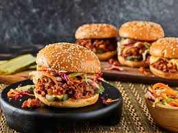

Inicio
Sloppy Joes

Descripción
No hay nada como los Sloppy Joes para saciar tus antojos de comida reconfortante. Esta receta de Sloppy Joe, que gusta a todos, te hará añorar tiempos más sencillos. Además, se prepara rápidamente con ingredientes que probablemente ya tengas a mano.
Un Sloppy Joe es un sándwich compuesto de carne molida y cebollas en una salsa a base de tomate servido en un pan de hamburguesa.
El sándwich probablemente se originó en Sioux City, Iowa, en la década de 1930. Según la leyenda, el "sándwich de carne suelta" fue creación de un cocinero llamado Joe.
Ingredientes
- 1 libra de carne molida magra
- ¼ taza de cebolla picada
- ¼ taza de pimiento verde picado
- ¾ taza de ketchup, o al gusto
- 1 cucharada de azúcar morena, o al gusto
- 1 cucharadita de mostaza amarilla, o al gusto
- ½ cucharadita de ajo en polvo
- sal y pimienta negra molida al gusto
- 6 panecillos de hamburguesa partidos
Pasos
- Calienta una sartén grande a fuego medio. Cocina la carne molida magra, revolviendo constantemente, hasta que la grasa comience a derretirse, de 3 a 4 minutos. Agrega la cebolla y el pimiento morrón; continúa cocinando hasta que las verduras se ablanden y la carne esté bien cocida, de 3 a 5 minutos más.
-
Incorpore el kétchup, el azúcar moreno, la mostaza y el ajo en polvo; sazone con sal y pimienta. Reduzca el fuego y cocine a fuego lento de 20 a 30 minutos.
-
Divida la mezcla de carne de manera uniforme entre los panecillos de hamburguesa.